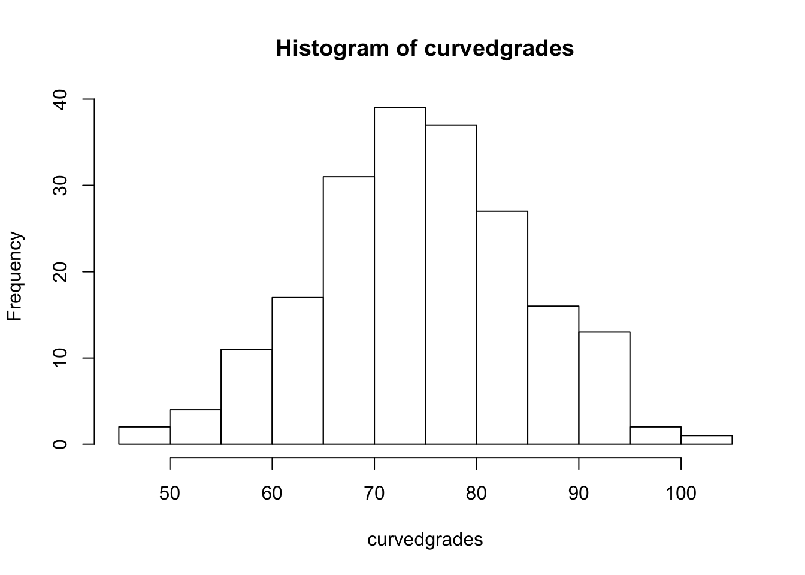
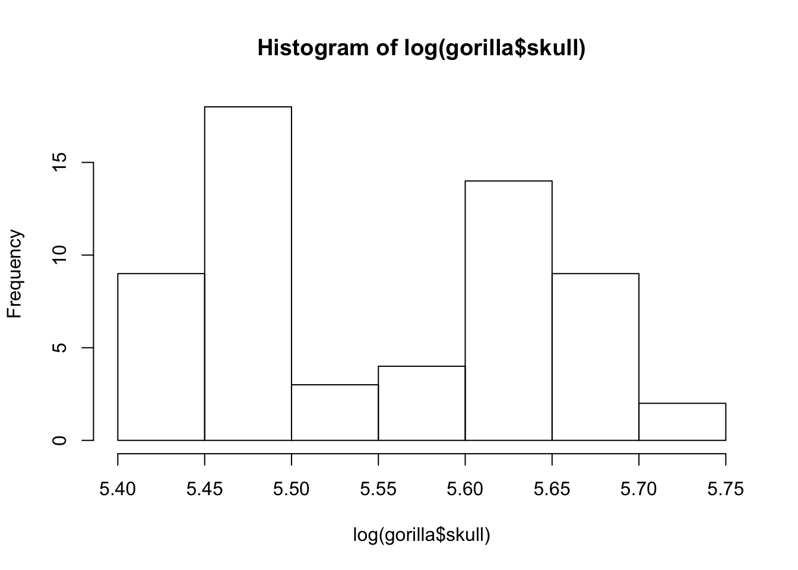

nouns <- c("apple", "flower", "insect", "lettuce", "knife", "dog", "cloud", "person", "cabinet", "flower" )
#length
length(nouns)## [1] 10#first four
nouns[1:4]## [1] "apple" "flower" "insect" "lettuce"#last 8
nouns[3:10]## [1] "insect" "lettuce" "knife" "dog" "cloud" "person" "cabinet"
## [8] "flower"#various elements
nouns[c(1, 3:6, 10)]## [1] "apple" "insect" "lettuce" "knife" "dog" "flower"#reverse
nouns[10:1]## [1] "flower" "cabinet" "person" "cloud" "dog" "knife" "lettuce"
## [8] "insect" "flower" "apple"#alternate reverse
rev(nouns)## [1] "flower" "cabinet" "person" "cloud" "dog" "knife" "lettuce"
## [8] "insect" "flower" "apple"grades <- rnorm(200, mean = 68, sd=10)
#curve
curvedgrades <- grades + 7
curvedgrades## [1] 73.89800 74.41457 75.12419 86.93077 76.16860 64.29650 81.95112
## [8] 72.41137 75.81536 60.86140 77.29281 83.33391 91.30417 93.44581
## [15] 78.87673 71.58588 86.01102 79.06310 84.96144 80.96728 53.52705
## [22] 72.65600 57.10497 92.16128 80.87795 75.91160 64.18778 67.84268
## [29] 85.87692 82.13233 78.78307 81.99464 75.67716 60.11785 68.93485
## [36] 74.92042 85.35349 78.16189 55.74166 60.10688 74.83380 88.35697
## [43] 75.80912 89.55982 77.98857 74.49625 84.41062 80.14156 88.80302
## [50] 51.99914 95.17979 73.07729 71.55852 86.92286 67.27858 73.69846
## [57] 75.25703 72.18278 45.78571 90.51554 68.11706 66.00976 72.68400
## [64] 92.31378 82.92676 78.15481 64.09887 62.86266 78.13960 76.52541
## [71] 66.75025 64.23128 62.37089 77.61489 69.99333 66.07964 56.95458
## [78] 87.72202 63.87353 76.71147 77.32475 71.80208 59.07091 84.76030
## [85] 71.25386 78.62686 70.81291 51.12257 69.57423 60.88103 80.48602
## [92] 78.60494 82.86850 80.54915 81.60414 87.02944 70.37836 72.38051
## [99] 85.82547 73.97275 76.19960 74.31203 81.56865 68.49973 84.08235
## [106] 82.12997 64.28560 66.70994 82.82625 66.27829 73.58647 78.81339
## [113] 70.49207 71.57410 93.71645 66.79010 60.39185 64.57460 78.19936
## [120] 79.98469 57.54421 71.11061 73.01548 74.45594 64.67176 79.13362
## [127] 65.97363 68.82975 56.45834 93.70379 76.32311 68.86914 72.77313
## [134] 55.98911 55.76397 77.89612 66.72270 59.74273 69.15005 61.69073
## [141] 78.40077 70.69648 86.88399 79.81953 65.38479 65.51733 95.60302
## [148] 85.96880 65.85137 69.71176 70.09014 78.05737 72.33252 90.53068
## [155] 91.79033 65.79169 83.23541 81.31340 93.51307 81.79641 71.17679
## [162] 72.16306 90.08277 67.11593 82.60935 69.13057 73.12634 47.47480
## [169] 53.59211 58.01159 103.91504 74.70971 74.44774 78.57951 72.49996
## [176] 87.94560 74.03611 87.88593 89.65602 81.75862 80.78485 80.22373
## [183] 78.02303 84.06803 69.07166 93.55378 75.79739 75.55709 63.85057
## [190] 75.37815 58.05280 67.07406 65.08488 65.39923 71.31619 79.07743
## [197] 94.84273 66.66804 71.76233 67.84067sd(curvedgrades)## [1] 10.42954min(curvedgrades)## [1] 45.78571max(curvedgrades)## [1] 103.915mean(curvedgrades)## [1] 74.51085hist(curvedgrades)
The original data file had duplicated column names (length and diameter), relying on another column to differentiate the anatomical element. This is a no, no. Column names must stand alone (e.g. tibia_diameter).
The rows containing species names violate the 1 row = 1 observation priciple. These rows should be turned into a column which records the species for each observation.
gorilla <- read.table("http://hompal-stats.wabarr.com/datasets/gorilla_sizes.txt", header=TRUE)
#figure out sex
ismale <- grepl("m", gorilla$specimen)
ismale <- factor(ismale)
levels(ismale) <- c("Female", "Male")
gorilla$sex <- ismale
table(gorilla$sex)##
## Female Male
## 30 29hist(log(gorilla$skull))
smalls <- gorilla[gorilla$skull > 250,]
smalls## specimen skull sex
## 31 _1_m1 270.137 Male
## 32 _1_m2 273.371 Male
## 33 _1_m3 292.082 Male
## 34 _1_m4 276.194 Male
## 35 _1_m5 282.821 Male
## 36 _1_m6 261.352 Male
## 37 _1_m7 267.413 Male
## 38 _1_m8 286.614 Male
## 39 _1_m9 288.243 Male
## 40 _1_m10 287.369 Male
## 41 _1_m11 275.070 Male
## 42 _1_m12 302.074 Male
## 43 _1_m13 280.033 Male
## 44 _1_m14 276.853 Male
## 45 _1_m15 273.564 Male
## 46 _1_m16 287.930 Male
## 47 _1_m17 273.241 Male
## 48 _1_m18 271.774 Male
## 49 _1_m19 287.890 Male
## 50 _1_m20 296.964 Male
## 51 _1_m21 283.813 Male
## 52 _1_m22 279.941 Male
## 53 _1_m23 300.346 Male
## 54 _1_m24 291.276 Male
## 55 _1_m25 262.899 Male
## 56 _1_m26 275.778 Male
## 57 _1_m27 276.420 Male
## 58 _1_m28 280.518 Male
## 59 _1_m29 286.621 Malebigs <- subset(gorilla, subset = skull>250)
bigs## specimen skull sex
## 31 _1_m1 270.137 Male
## 32 _1_m2 273.371 Male
## 33 _1_m3 292.082 Male
## 34 _1_m4 276.194 Male
## 35 _1_m5 282.821 Male
## 36 _1_m6 261.352 Male
## 37 _1_m7 267.413 Male
## 38 _1_m8 286.614 Male
## 39 _1_m9 288.243 Male
## 40 _1_m10 287.369 Male
## 41 _1_m11 275.070 Male
## 42 _1_m12 302.074 Male
## 43 _1_m13 280.033 Male
## 44 _1_m14 276.853 Male
## 45 _1_m15 273.564 Male
## 46 _1_m16 287.930 Male
## 47 _1_m17 273.241 Male
## 48 _1_m18 271.774 Male
## 49 _1_m19 287.890 Male
## 50 _1_m20 296.964 Male
## 51 _1_m21 283.813 Male
## 52 _1_m22 279.941 Male
## 53 _1_m23 300.346 Male
## 54 _1_m24 291.276 Male
## 55 _1_m25 262.899 Male
## 56 _1_m26 275.778 Male
## 57 _1_m27 276.420 Male
## 58 _1_m28 280.518 Male
## 59 _1_m29 286.621 Male